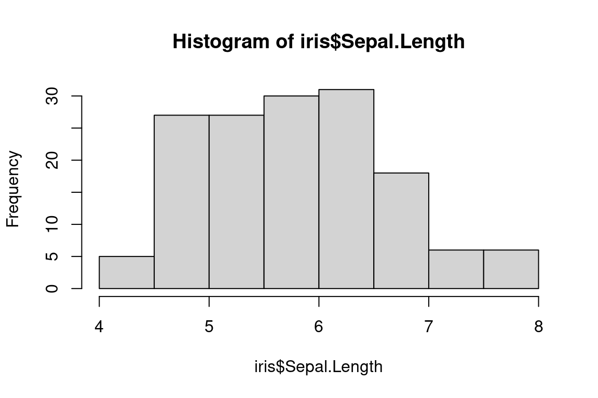
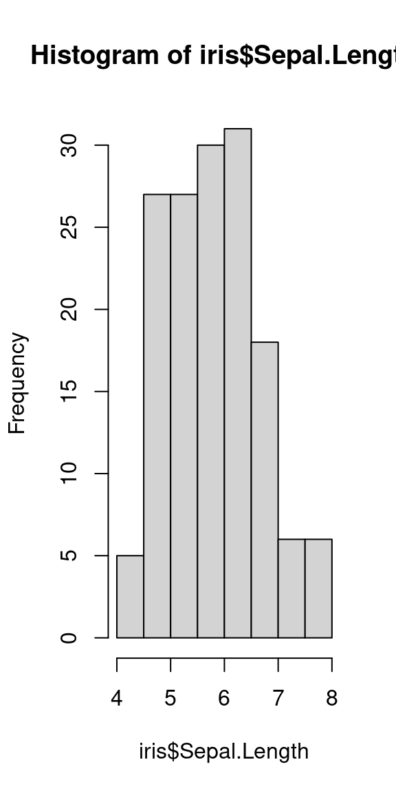
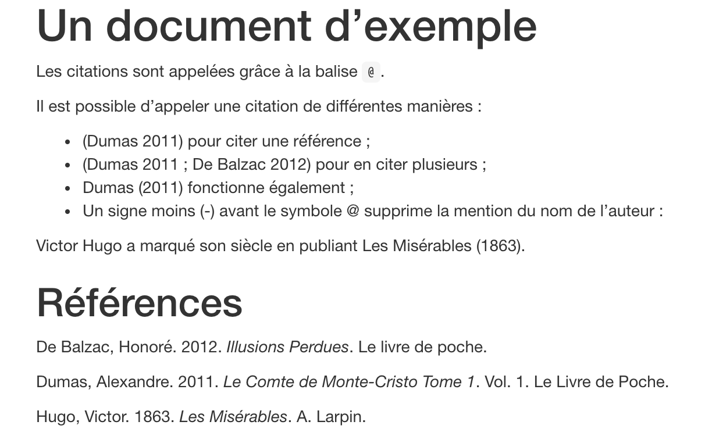
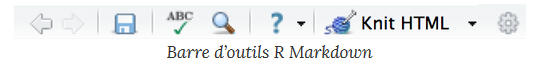

install.packages("tinytex")
tinytex::install_tinytex() 28 Produire des documents avec R Markdown
28.1 Tâches concernées et recommandations
L’utilisateur souhaite produire avec R des documents contenant à la fois du texte, des extraits de code R et les résultats de l’exécution de programmes R.
Tâche concernée et recommandation
- Il est conseillé d’utiliser le package
rmarkdownqui permet de produire des documents avecRen utilisant la syntaxeR Markdown; - Pour aller plus loin et s’exercer sur
R Markdown, il est recommandé de lire le chapitre surR Markdowndans la formation Travail collaboratif avecR.
Note
Certains exemples de cette fiche utilisent les données disponibles dans le package doremifasolData ; vous ne pourrez reproduire ces exemples que si ce package est installé sur la machine sur laquelle vous travaillez. Si vous ne savez pas si ce package est déjà installé, consultez la fiche Comment utiliser la documentation utilitR.
28.2 Présentation générale de R Markdown
R Markdown est une extension de R qui se présente sous la forme d’un package. R Markdown permet de produire des documents texte en y intégrant nativement des morceaux de code R (pour le rendre public, pour générer des sorties…). R Markdown permet de fluidifier le processus de rédaction d’une publication, en réduisant fortement le nombre de gestes manuels nécessaires pour inclure des graphiques ou du code dans un document : plutôt qu’avoir un code SAS ou Stata ayant généré des sorties Excel/Calc intégrées dans un document Word ou transformées en table LaTeX, on dispose d’un unique document-source qui contient à la fois le texte et les codes qui produisent les sorties du document final. L’utilisation de R Markdown facilite la production de publications reproductibles.
28.2.1 De Markdown à R Markdown
Markdown est un système d’édition doté d’une syntaxe simplifiée souvent utilisé pour faire de la documentation de projet. Le format est utilisé sur de nombreux sites internet, notamment Gitlab et Stackoverflow. L’extension de ce type de fichier est .md. Markdown présente deux avantages. D’une part, il est facile d’inclure des blocs de code informatique et des équations mathématiques dans un document Markdown. D’autre part, le formatage de blocs de code est simple et très bien fait (et beaucoup plus léger qu’en LaTeX par exemple).
Comme son nom l’indique, R Markdown permet de lier du texte (Markdown) avec du code R. A la différence d’un fichier Markdown classique, un document R Markdown peut à la fois présenter et exécuter du code R, et peut donc intégrer facilement les sorties de ce code (graphiques, tableaux, cartes…). La présente documentation est ainsi entièrement rédigée avec R Markdown, comme on peut le voir en jetant un coup d’oeil au code source de cette fiche.
Il est toutefois possible de produire un document R Markdown sans exécuter les codes R qu’il contient (comme dans un Markdown classique). En outre, R Markdown propose de plus en plus de langages pour aller au-delà de R, parmi lesquels Python, SQL, C++…
Note
R Markdown est une alternative aux notebooks Jupyter qui permettent de lier du code et du texte. Du point de vue de la reproductibilité des résultats, les fichiers R Markdown sont préférables car l’exécution du code dans le document est linéaire alors que les blocs de code des notebook jupyter peuvent être exécutés dans le désordre.
28.2.2 Que peut produire R Markdown ?
Il y a une grande liberté dans les formats de sortie disponibles pour un fichier Markdown. Parmi les principaux types de sorties :
- Des rapports ou articles en
pdf,html,doc,odt, etc. ; - Des présentations sous forme de slides
pdfouhtml; - Des sites web (comme celui associé à cet ouvrage ou comme la page d’accueil d’utilitR).
Note
Pour la génération d’un document au format pdf, vous devez avoir une installation fonctionnelle de LaTeX sur votre système. Si ça n’est pas le cas, le package tinytex de Yihui Xie vise à faciliter l’installation d’une distribution LaTeX minimale quel que soit le système d’exploitation de votre machine. Pour l’utiliser il vous faut d’abord installer le package tinytex, puis lancer l”installation de LaTeX (prévoir un téléchargement d’environ 200Mo). Voici les instructions à exécuter :
Sous AUS, il n’est pas possible d’installer ce package car il a besoin d’internet. Une distribution MiKTeX (plus riche que tinytex) est disponible et permet de compiler en pdf.
Tip
Il existe une manière d’obtenir une sortie en pdf qui n’implique pas de passer par LaTeX grâce au package pagedown (présentation plus bas). Par l’intermédiaire de Google Chrome ou Chromium (sa version open-source), pagedown transforme directement le html en pdf. Dans ce cas, il faut ajouter la ligne knit : pagedown::chrome_print dans l’en-tête du document (documentation).
28.2.3 Pourquoi utiliser R Markdown ?
R Markdown présente plusieurs avantages pour la production de documents statistiques :
- L’utilisation de
R Markdownamène l’utilisateur à se préoccuper de la reproductibilité des productions statistiques. - La dissociation du fond et de la forme du document permise par
R Markdowna de nombreuses vertus, parmi lesquelles :- elle allège les mises à jour ou correctifs du texte ou du code générant des sorties ;
- elle donne de la visibilité au code ayant généré les résultats et illustrations ;
- il est facile de changer le format du document final (par exemple produire un fichier
htmlplutôt quepdf), et la gestion de multiples formats de publication est peu coûteuse (puisque le document source reste le même pour tous les formats).
- Il est possible de mettre des commentaires partout dans le document, ce qui permet de détailler les résultats et les choix de méthode, et facilite le suivi de l’analyse ou l’appropriation par une personne extérieure.
- La syntaxe
R Markdowna été pensée pour avoir deux grandes qualités :- Elle est simple et rapide à prendre en main ; elle est notamment beaucoup plus simple que la syntaxe
html; - Elle est très légère visuellement, ce qui fait qu’un code brut
R Markdownreste lisible même pour des personnes qui ne connaissent pas la syntaxe (contrairement àLaTeX…).
- Elle est simple et rapide à prendre en main ; elle est notamment beaucoup plus simple que la syntaxe
- Lorsqu’on associe
R Markdownet un outil de versioning tel que Git, les modifications successives apportées au document sont facilement traçables, ce qui permet de :- maîtriser l’évolution du document, par exemple sur la succession de corrections, apportées tout au long d’un circuit de relecture ;
- ne pas multiplier les versions d’un même document ;
- combiner facilement les modifications apportées par plusieurs utilisateurs.
-
R Markdownest bien intégré àRStudio. Les extensions.Rmdsont reconnues automatiquement parRStudioce qui permet d’avoir de l’autocomplétion également lors de la rédaction de blocs de texte, la possibilité d’exécuter des bouts de code uniquement lors d’une phase d’exploration…
28.3 Comment construire un document R Markdown ?
28.3.1 Anatomie de la structure d’un document R Markdown
Un document R Markdown comprend deux parties principales :
- L’en-tête (YAML header) qui gère les éléments de style ;
- Le contenu qui gère le fond et permet d’alterner librement texte et code.
28.3.1.1 L’en-tête
L’en-tête d’un document R Markdown (parfois appelé YAML header) est délimité par deux lignes de pointillés et contient les métadonnées du document (titre, auteurs, options générales de mise en page…). Il contient au minimum le titre du document et le format de sortie. Il peut être enrichi d’autres champs pour modifier certaines métadonnées (par exemple la date) ou le style du document compilé. Voici un exemple d’en-tête :
---
title : "Produire des documents avec R Markdown"
author : "Daffy Duck"
date : "2024-06-05"
output :
html_document :
keep_md : true
self_contained : true
bibliography : book.bib
description : "Un document où je révèle que je ne suis pas un canard"
---Les éléments obligatoires sont présents (titres et format de sortie, dans le cas un livre) mais de nombreux champs supplémentaires peuvent être ajoutés. Par exemple, les références bibliograhiques sont listées dans un fichier séparé et c’est R Markdown lui-même qui se charge de la mettre en forme et de la lier à des références dans le texte.
28.3.1.2 Corps d’un document R Markdown
Le corps d’un document R Markdown comprend deux types de blocs, qu’on peut alterner librement :
- Des blocs de texte brut mis en forme selon la syntaxe markdown ;
- Des blocs de code
R(appelés chunks) encadrés par les balises ``` :- ces chunks peuvent être nommés (il est même recommandé de le faire) ;
- des options peuvent être spécifiées. Ces options (détaillées plus bas) permettent par exemple de ne pas faire figurer l’output du code dans le document final ou inversement de ne montrer que l’output du code et non le code l’ayant généré.
Note
Il est possible d’ajouter en dessous de l’en-tête un tout premier chunk nommé setup, qui permet de définir des options par défaut pour tous les chunks du document. Par exemple, on peut souhaiter par défaut ne pas afficher le code R de chaque bloc dans le document final.
```{r setup, include=FALSE}
knitr::opts_chunk$set(echo = TRUE)
```
28.3.2 Ecrire des blocs de texte en R Markdown
Le corps d’un document contient presque toujours des blocs de texte qui suivent la syntaxe Markdown. Voici un exemple :
Ceci est du texte avec *de l'italique* et **du gras**.
On peut définir des listes à puces :
- premier élément
- deuxième élémentCe code génèrera le texte mis en forme suivant :
Ceci est du texte avec de l’italique et du gras.
On peut définir des listes à puces :
- premier élément
- deuxième élément
On peut définir des titres de différents niveaux en faisant débuter une ligne par un ou plusieurs # :
# Titre de niveau 1
## Titre de niveau 2
### Titre de niveau 3Quand des titres ont été définis, si vous cliquez sur l’icône Show document outline totalement à droite de la barre d’outils associée au fichier R Markdown, une table des matières générée automatiquement à partir des titres s’affiche et vous permet de naviguer facilement dans le document :

La syntaxe Markdown permet d’autres mises en forme, comme la possibilité d’insérer des liens ou des images. Par exemple, le code suivant :
[Exemple de lien](https://example.com)Prendra la forme suivante, une fois compilé :
Dans RStudio, le menu Help > Markdown quick reference donne un aperçu plus complet de la syntaxe.
À partir de la version 1.4, RStudio propose de nombreux outils pour faciliter l’édition de fichiers R Markdown. La principale innovation est l’éditeur visuel de Markdown, accessible grâce au bouton
situé en haut à droite de l’éditeur, qui propose une pré-visualisation du document compilé en live mais aussi des fonctionnalités qui facilitent l’écriture de Markdown (correcteur orthographique amélioré, ajout de citations bibliographiques facilité, plus de raccourcis claviers, etc.).

Tip
L’addin Remedy est également pratique et facilite l’écriture de fichiers R Markdown grâce à un menu qui permet de cliquer directement sur le type de balise désiré :

Pour l’installer
remotes::install_github("ThinkR-open/remedy")Pour compter le nombre de mots dans un fichier .Rmd, on peut utiliser le très pratique addin nommé Wordcountaddin :
devtools::install_github("benmarwick/wordcountaddin")
28.3.3 Insérer un résultat R dans du texte
Pour renforcer la reproductibilité d’un document R Markdown, il est possible de faire appel à R pour insérer des résultats dans du texte. C’est le principe du inline code dans R Markdown.
Il suffit, pour cela, d’adopter la structure suivante : `r 2+2` . Le résultat sera automatiquement inséré par R en substitution de l’expression.
2 + 2 =
`r 2+2`
deviendra ainsi
2 + 2 = 4
28.3.4 Ecrire des blocs de code
28.3.4.1 Insérer un bloc de code
Outre du texte libre au format Markdown, un document R Markdown peut également contenir du code R. Celui-ci est inclus dans des blocs (chunks) délimités par la syntaxe suivante :
```{r}
x <- 1:5
```Vous pouvez utiliser le menu Code > Insert Chunk de RStudio ou utiliser le raccourci clavier Ctrl+Alt+I pour automatiquement insérer un bloc R à remplir. Quand votre curseur se trouve dans un bloc, vous pouvez saisir le code R que vous souhaitez, l’exécuter, utiliser l’autocomplétion, etc… exactement comme si vous vous trouviez dans un script R. Vous pouvez également exécuter l’ensemble du code contenu dans un bloc à l’aide du raccourci clavier Ctrl+Maj+Entrée.
28.3.4.2 Exécuter des blocs de code
Dans RStudio les blocs de code R sont en général affichés avec une couleur de fond légèrement différente pour les distinguer du reste du document. En haut à droite du bloc, des boutons sont disponibles si on désire :
- ajouter des options au bloc ;
- exécuter tous les blocs avant celui-ci ;
- exécuter ce bloc exclusivement.

Lorsque le document est compilé au format HTML, PDF ou docx, chaque bloc est exécuté tour à tour, et le résultat inclus dans le document final, qu’il s’agisse de texte, d’un tableau ou d’un graphique. Les blocs sont liés entre eux, dans le sens où les données importées ou calculées dans un bloc sont accessibles aux blocs suivants. On peut donc aussi concevoir un document R Markdown comme un script R dans lequel on aurait intercalé des blocs de texte au format Markdown.
Note
Le bouton Knit ou le raccourci clavier CTRL+SHIFT+K lancent automatiquement l’exécution du code R dans une nouvelle session. Cela signifie que les objets appartenant à l’environnement global de l’utilisateur sont ignorés, par défaut. C’est une bonne pratique parce qu’elle aboutit à des documents plus reproductibles.
Par défaut, la commande rmarkdown::render n’utilise pas cette option. Si le fichier R Markdown est compilé en utilisant rmarkdown::render, il est recommandé d’utiliser la syntaxe rmarkdown::render(..., envir = new.env())
Tip
Par défaut, dans RStudio, le résultat du bloc de code ne s’affiche pas dans la console mais sous le bloc, dans l’interface visuelle du document. Si vous n’appréciez pas ce fonctionnement, vous pouvez le modifier de la façon suivante : aller dans le panneau Tools > Global Options..., onglet R Markdown, puis décocher l’option Show output inline for all R Markdown documents.
28.3.4.3 Définir les options des blocs de code
Il est possible (et recommandé) de nommer un bloc en utilisant un label avant les options. Le nom du bloc se place dans la première ligne du bloc, juste après la lettre r : {r nom_du_bloc}.
Un point important est que deux blocs ne peuvent pas porter le même nom, il faut donc être rigoureux dans le choix du nom. Nommer les blocs de code présente plusieurs avantages :
- en cas d’erreur lors de la compilation du document,
Rdonne le nom du bloc qui provoque l’erreur. Avec des blocs non nommés, on a pour seule informationunnamed-chunk-XXce qui rend difficile d’identifier la source de l’erreur dans un document très long ; - le bloc peut facilement être retrouvé dans l’arborescence RStudio (voir capture d’écran).

Outre un nom, on peut passer à un bloc une série d’options sous la forme option = valeur. Ces options permettent de contrôler le comportement du bloc lors de la compilation du document. Les blocs de code acceptent de nombreuses options. Les principales options sont les suivantes :
| Option | Valeurs possibles | Valeur par défaut |
|---|---|---|
| echo | TRUE/FALSE |
TRUE |
| eval | TRUE/FALSE |
TRUE |
| include | TRUE/FALSE |
TRUE |
| results | 'hide'/'asis'/'markup'/'hold' |
'markup' |
| error | TRUE/FALSE |
TRUE |
| warning | TRUE/FALSE |
TRUE |
| message | TRUE/FALSE |
TRUE |
Voici un exemple de bloc avec un nom et des options :
```{r mon_bloc, echo = FALSE, warning = TRUE}
x <- 1:5
```Dans ce bloc, l’option echo = FALSE implique que le code R n’est pas inséré dans le document compilé, et que seul le résultat du code est visible ; l’option warning = TRUE implique que les éventuels avertissements générés par l’exécution du code sont insérés dans le document compilé.
Les options permettent également de contrôler la nature de la sortie R. En particulier, les options fig.height et fig.width permettent de définir la taille de la sortie. Par exemple, le bloc suivant génèrera un graphique plus large que haut :
```{r, fig.width=12, fig.height=8}
hist(iris$Sepal.Length)
```
alors que le bloc suivant génèrera une figure aux dimensions différentes :
```{r, fig.width=6, fig.height=12}
hist(iris$Sepal.Length)
```
28.4 Paramétrer un document R Markdown
28.4.1 Personnaliser les options de l’en-tête
L’en-tête fonctionne selon un système de clé-valeur indenté, format appelé YAML. Le nom de l’option (clé) est suivi de : qui permet de spécifier sa valeur (par exemple true).
Au premier niveau (sans indentation) se trouvent les options générales, par exemple le titre ou l’auteur du document. S’il est nécessaire d’amender le comportement par défaut de l’option générale, on introduit un niveau d’indentation (une tabulation ou quatre espaces).
La personnalisation du document généré se fait en modifiant des options dans le préambule du document. RStudio propose également une petite interface graphique permettant de changer ces options plus facilement. Pour cela, cliquez sur l’icône en forme d’engrenage à droite du bouton Knit et choisissez Output Options :

Lorsque vous changez des options par cette interface, RStudio va en fait modifier le préambule de votre document. Ainsi, si vous choisissez d’afficher une table des matières et de modifier le thème de coloration syntaxique, votre en-tête va devenir quelque chose comme :
---
title : "Test R Markdown"
output :
html_document :
highlight : kate
toc : yes
---Vous pouvez également modifier les options directement en éditant le préambule. À noter qu’il est possible de spécifier des options différentes selon les formats. Dans ce cas, le format représente le premier niveau d’indentation et les options de celui-ci le second. Par exemple,
---
title : "Test R Markdown"
output :
html_document :
highlight : kate
toc : yes
pdf_document :
fig_caption : yes
highlight : kate
---La liste complète des options possibles est présente sur le site de la documentation officielle (très complet et bien fait) et sur l’antisèche et le guide de référence, accessibles depuis RStudio via le menu Help puis Cheatsheets.
28.4.2 Gestion automatique de la bibliographie
Parmi les tâches les plus pénibles dans un document WYSIWYG (What you see is what you get), la bibliographie tient une place de premier choix. Les utilisateurs de

connaissent le temps que peut faire gagner un module adapté de gestion des ressources bibliographiques, à savoir bibtex. Un module adapté de bibliographie repose sur des métadonnées avec un système ressemblant au format JSON, c’est-à-dire des champs (par exemple author) associé à des valeurs au format prédéfini (par exemple Dumas, Alexandre).
Le format bibtex constitue un standard dans le domaine. Il s’agit de définir le type de publication (livre, article, rapport, etc.) qui déterminera la manière dont sera citée le document dans la norme bibliographique adoptée et les champs informatifs (auteur, année, etc.). Le principal avantage d’une gestion bibliographique avec bibtex est que formattage de la référence bibliographique n’est pas fait par l’utilisateur mais est fait automatiquement en fonction d’une norme qui met en forme les champs de la référence bibliographique. Ce sont ainsi des heures pénibles de travail économisées. Une référence bibliographique prend la forme suivante :
@book{dumascomte,
title={Le Comte de Monte-Cristo tome 1},
author={Dumas, Alexandre},
volume={1},
year={2011},
publisher={Le Livre de Poche}
}Un fichier séparé, généralement au format .bib, centralise les références. L’ajout du champ bibliography au yaml permet à R Markdown d’automatiquement construire la bibliographie à la fin du document.
Tip
La bibliographie se trouve généralement à la fin du document, sauf si un fichier de style [lien vers partie template] en modifie l’emplacement. En général, on ajoute ainsi un titre de section du type # Référencesà la fin du .Rmd pour dissocier la bibliographie de la fin du texte.
---
title : "Un document d'exemple"
output : html_document
bibliography : bibliography.bib
---
Les citations sont appelées grâce à la balise `@`.
Il est possible d'appeler une citation de différentes manières :
* [@dumascomte] pour citer une référence ;
* [@dumascomte ; @Balzacillusions] pour en citer plusieurs ;
* @dumascomte fonctionne également ;
* Un signe moins (-) avant le symbole @ supprime la mention du
nom de l'auteur :
Victor Hugo a marqué son siècle en publiant Les Misérables [-@hugo1863miserables].
# Référencesdonnera l’output suivant :

Tip
Il est rare qu’il soit nécessaire de devoir écrire soi-même la bibliographie lorsqu’on écrit un article académique. En effet, on trouve souvent des références au format bibtex sur les bases de données scientifiques, notamment sur google scholar ou sur le site ideas.repec (pour les articles d’économie). Sur scholar, pour récupérer une citation, on clique sur le guillemet puis sur bibtex :

Cela ouvre alors un onglet vierge avec la citation en question, en l’occurrence
@book{dumascomte,
title={Le Comte de Monte-Cristo tome 1},
author={Dumas, Alexandre},
volume={1},
year={2011},
publisher={Le Livre de Poche}
}
28.5 Intégrer des tableaux dans un document R Markdown
Il existe plusieurs manières de faire des tableaux avec R Markdown. L’écosystème dans ce domaine n’est pas encore stabilisé et évolue rapidement, notamment du fait du développement récent du package gt.
L’approche la plus appropriée dépend de la structure du besoin :
- Pour une table de présentation simple, le tableau peut être construit en
Markdown - Pour une table construite à partir de données, des packages spécialisés sont plus adaptés. L’utilisation de ces derniers permet de ne pas écrire les valeurs numériques et améliore ainsi la reproductibilité des tables construites.
Tip
Pour des tables simples, notamment de statistiques agrégées, la fonction kable (du package knitr) et le package d’extension kableExtra peuvent être utilisés.
Pour des tables plus complexes, les packages gt et flextable peuvent être mobilisés.
Pour des tables de régressions économétriques, le package stargazer peut être utilisé.
Pour aller plus loin, il est possible de se référer à ce tutoriel
28.5.1 Construction d’une table Markdown
Le balisage des tables en Markdown est très intuitif. Il suffit d’adopter la structure suivante
| Titre colonne 1 | Titre colonne 2 |
| ------------------ | ---------------- |
| Texte | Encore du texte |
| Texte | Encore du texte |et on obtient ainsi le tableau mis en forme
| Titre colonne 1 | Titre colonne 2 |
|---|---|
| Texte | Encore du texte |
| Texte | Encore du texte |
L’alignement des colonnes n’est pas obligatoire mais est une bonne pratique pour rendre plus lisible le fichier source.
Des éléments supplémentaires de stylisation sont disponibles dans le guide de la syntaxe Markdown.
28.5.2 Une table basique en R Markdown
Supposons, par exemple, qu’on désire faire la liste de toutes les communes dont le libellé contient “Montreuil-sur”. On commence par récupérer les données du Code officiel géographique 2019, disponibles dans le package doremifasolData. On utilise ensuite le package stringr pour repérer les communes dont le libellé contient “Montreuil-sur” (l’usage de ce package est détaillé dans la fiche [Manipuler des données textuelles]).
library(doremifasolData)
library(stringr)
# Charger les données du COG
cog_com_2019 <- doremifasolData::cog_com_2019
montreuil <-
cog_com_2019[stringr::str_detect(cog_com_2019$libelle, "Montreuil-sur"), c("libelle","com")]Dans ce cas, on peut représenter les résultats avec la fonction kable du package knitr :
Le package kableExtra fournit un ensemble de fonctions de style pour personnaliser le tableau. Une documentation complète peut être trouvée ici.
28.5.3 Des tables plus complexes
- Le package gt peut être mobilisé pour construire des tables plus complexes, notamment proposant des éléments à cheval sur plusieurs lignes ou plusieurs colonnes.
- Pour constuire des tables de régression, la référence est le package
stargazer. Celui-ci propose une grande variété d’options et de nombreux modèles, issus de packages multiples.
28.6 Extensions de rmarkdown et modèles de documents
A la création d’un document (File -> New File -> R Markdown), un modèle de document minimal est créé. Des modèles plus riches peuvent être utilisés, à partir de packages comme
- rticles dont la vocation est de proposer des modèles de journaux académiques, au format pdf
- pagedown qui offre d’autres modèles et plus de marges de liberté dans l’édition du modèle
Des extensions de R Mardown permettent également de construire un ensemble structuré de documents à partir d’un ensemble de fichiers Markdown ou R Markdown
-
bookdown: ce package permet de construire des sites de documentations ou des livres au format pdf. Le présent ouvrage est, par exemple, construit à partir de ce package ; -
blogdown: ce package permet de construire des sites web plus généraux quebookdown. Le site web utilitR est, par exemple, construit à partir de ce package ; -
pkgdown: ce package permet de construire de manière automatique des sites de documentation de packages.
Il existe également de nombreuses initiatives, par exemple gouvdown, pour proposer des modèles de documents dans l’administration française, harmonisés notamment avec les chartes graphiques de certaines institutions.
28.7 Intégrer des figures dans R Markdown
28.7.1 Depuis un fichier image
Il existe deux manières canoniques d’introduire des graphiques dans un document R Markdown :
-
est une syntaxe héritée deMarkdown. Elle offre des possibilités de customisation limitée mais elle a l’avantage de ne pas dépendre deRet ainsi, de fonctionner quelque soit le constructeur de document utilisé. Les options supplémentaires s’intègrent dans des accolades{width=50%}; -
knitr::include_graphicspermet, en conjonction d’options de blocs, d’aller plus loin.
28.7.2 Sans passer par un fichier image
R Markdown présente l’avantage de pouvoir créer un document sans générer de sorties intermédiaires (tableaux, graphiques…). Si un bloc de code propose d’inséer un graphique dans le document final, le graphique sera automatiquement et directement intégré au document. Par exemple, le bloc suivant permet de représenter l’histogramme des populations communales (avec une échelle logarithmique) à partir des données Filosofi agrégées, disponibles dans le package doremifasolData.
library(doremifasolData)
library(ggplot2)
filosofi_com_2016 <- doremifasolData::filosofi_com_2016
ggplot(data = filosofi_com_2016) +
geom_histogram(aes(x = NBPERSMENFISC16, y = ..density..)) +
xlab("Nombre de personnes") + ylab("Densité") +
scale_x_log10()28.8 Pour en savoir plus
- Les ouvrages Cookbook R Markdown et R Markdown Definitive Guide ;
- Le manuel de référence bookdown ;
- La partie
R Markdownde la formation Travail collaboratif avecR; -
Guide de la syntaxe
R Markdown; R Markdown Cheatsheet- Cours de Julien Barnier sur le sujet ;
-
Chapitre sur le sujet dans le livre
RFor Data Science ; - Tutoriel de ThinkR sur les tableaux
28.2.4 Comment fonctionne
R Markdown?28.2.4.1 Dissociation du fond et de la forme
R Markdowndissocie le fond et la forme du document, contrairement aux logiciels de type Office qui fonctionnent selon le principe du WYSIWYG (What you see is what you get). Le fichier.Rmdcontient donc à la fois le texte brut et des commandes de mise en forme. On parle de WYSIWYW (What you see is what you want). Le fichier est composé de texte brut et éventuellement de code informatique, et doit être compilé pour produire le fichier de sortie. Le document final ne peut être visualisé qu’après compilation. A noter que les illustrations (graphiques, tableaux, cartes) peuvent être générées dynamiquement à partir des blocs de codeRintégrés dans le documentRmd, ou insérées par des liens.Les connaisseurs du format
LaTeXreconnaîtront une grande proximité entreLaTeXetMarkdown. En effet, dans les deux cas, la mise en forme est appelée par des commandes spéciales. Toutefois,Markdownse distingue deLaTeXpar des commandes de mise en forme beaucoup plus légères. Par exemple, il faut utiliser la fonction\textit{italique}enLaTeXpour mettre du texte en italique, alors qu’enMarkdownil suffit de mettre le texte entre deux astériques*italique*.28.2.4.2 Comment
R Markdownproduit-il un document ?La compilation d’un document
R Markdownse déroule en deux étapes qui sont gérées de manière interne par le packagermarkdown:.Rmd(R Markdown) en.md(Markdown) : le packageknitrse charge de transformer le texte et les sortiesRen un documentmarkdownstandard..mden un format de sortie standard (html,pdf, etc.) : tâche effectuée par le logiciel nommépandoc. Ce dernier est automatiquement installé lorsqu’on a installé le packagermarkdown, il n’y a donc pas à le télécharger.Pour obtenir la sortie désirée d’un document
R Markdownon peut utiliser deux méthodes :Knitde RStudio convient bien :
rmarkdown::renderpour générer de manière automatique un fichierR Markdown.Pour assurer la reproductibilité des résultats, le document doit pouvoir être généré par chacun des membres de l’équipe projet. Voici quelques bonnes pratiques pour y parvenir :
Tout comme pour un script
R, les ressources (images, données…) doivent être appelées via des chemins d’accès relatifs. Par défaut, le dossier de travail de travail est celui où se situe le document. Il faut donc utiliser des chemins relatifs, et non absolus :Si un fichier
R Markdownse situe dans l’arborescence d’unR Project, il faut faire attention à la question du chemin relatif. Il peut être pratique de fixer comme chemin de départ, l’emplacement duR Project. Les avantages et inconvénients d’un tel choix sont développés iciQuelle que soit la configuration, l’emplacement des ressources doit respecter une arborescence connue et utilisée par tous.
Les fichiers
.Rmds’intègrent bien avecgitcar il s’agit de fichiers texte. En revanche, il faut éviter de mettre sous contrôle de version les fichiers de sortie (pdf,html). Pour ce faire, on peut ajouter au fichier.gitignoreles extensions associées, par exemple*.pdfou*.html